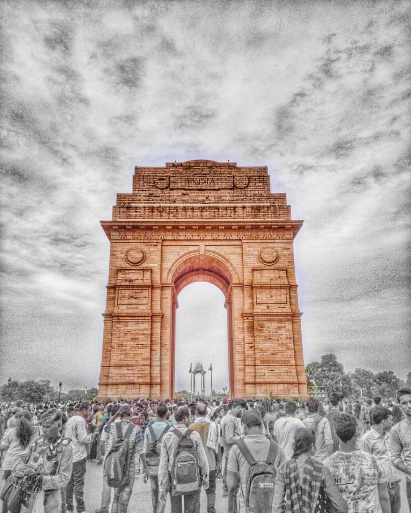

India Gate
The India Gate is located at
the heart of India’s capital city, New Delhi.
About 2.3 km from the Rashtrapati Bhavan, it
is located on the eastern extremity of the
ceremonial boulevard, Rajpath. India Gate is
a war memorial dedicated to honor the soldiers
of the Undivided Indian Army who died during
World War I between 1914 and 1921. War memorials
are buildings, installations, statues or other
edifices dedicated either to celebrate victory
in war, or to pay tribute to those who died or
were injured in war. Delhiites and tourists alike
throng the India Gate Lawns surrounding the monument
for a leisurely evening, enjoying the light show at
the fountains along with snacking on street food. A
National War Memorial to honor all armed forces members
killed after 1947 is under
construction at the ‘C’ Hexagon of India Gate.